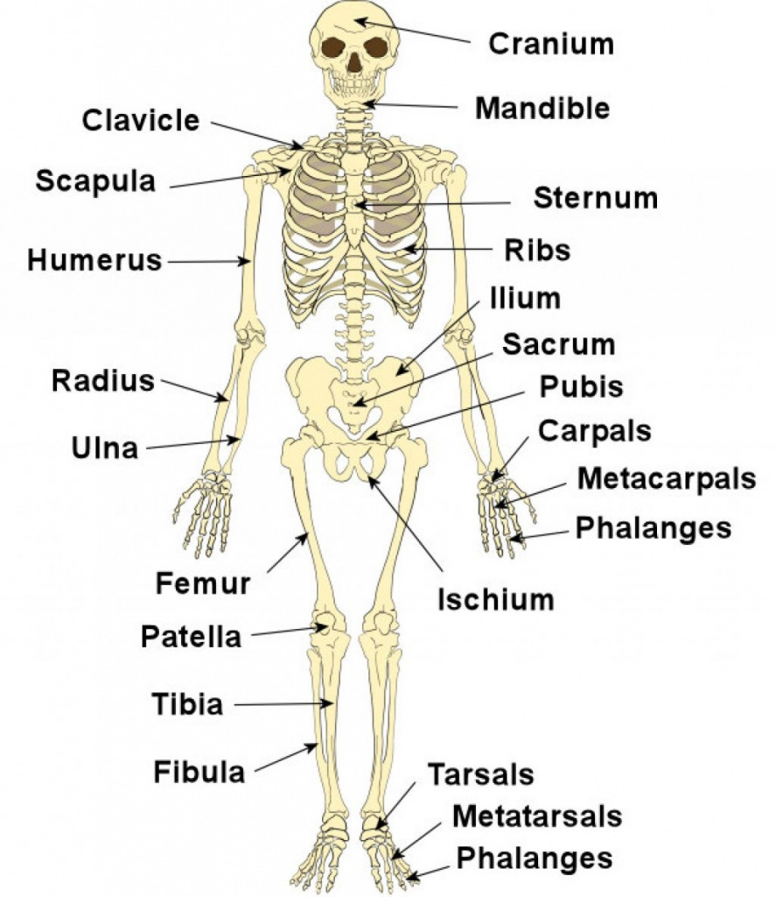
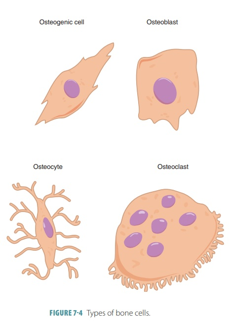

What is the Skeletal System?
The human skeletal system is the internal framework of the body, made up of bones, cartilage,
tendons, and ligaments. In adult humans it consists of 206 bones that form the structural
support for the entire body, protect internal organs, enable movement, store minerals, and produce
blood cells through a process called hematopoiesis.
The skeleton is divided into two main parts:
- Axial Skeleton — 80 bones including the skull, vertebral column, and rib cage.
It forms the central axis of the body and protects the brain, spinal cord, heart, and lungs.
- Appendicular Skeleton — 126 bones including the limbs, shoulder girdle, and
pelvic girdle. It enables locomotion and manipulation of the environment.
Key Functions of the Skeletal System
- Support: Provides the rigid framework that holds the body upright and supports soft tissues.
- Protection: The skull shields the brain; the rib cage guards the heart and lungs.
- Movement: Bones act as levers for muscles to pull against, producing movement.
- Mineral Storage: Bones store calcium and phosphorus, releasing them when needed.
- Blood Cell Production: Red bone marrow produces red blood cells, white blood cells, and platelets.
- Energy Storage: Yellow bone marrow stores adipose (fat) tissue as an energy reserve.
Bone tissue itself is a living, dynamic material that constantly remodels itself through the action
of two cell types: osteoblasts (which build new bone) and osteoclasts (which break
down old bone). This remodeling process allows bones to repair fractures and adapt to mechanical stress.
Cartilage is found at the ends of bones (articular cartilage), forming a smooth, low-friction
surface that allows joints to move freely. Ligaments connect bone to bone, while
tendons connect muscles to bones, both made of dense connective tissue.
Visual Reference


Bibliography & External Resources
For additional information about the skeletal system, visit:
🔗 Encyclopaedia Britannica — Human Skeletal System